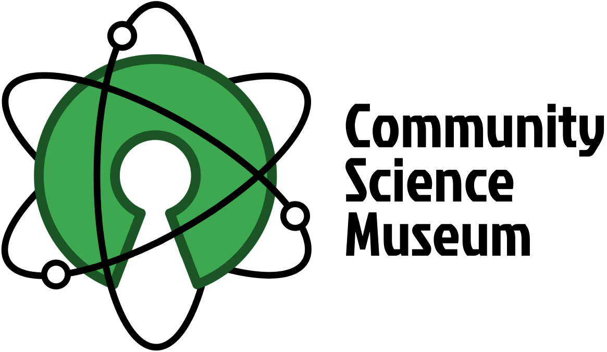

Cross Course Project
Semester Project 1
The site for the museum Community Science Museum, made for the semester project
Project Exam 1
The site for the blog Babel, made for the project exam
The site for the museum Community Science Museum, made for the semester project
The site for the blog Babel, made for the project exam